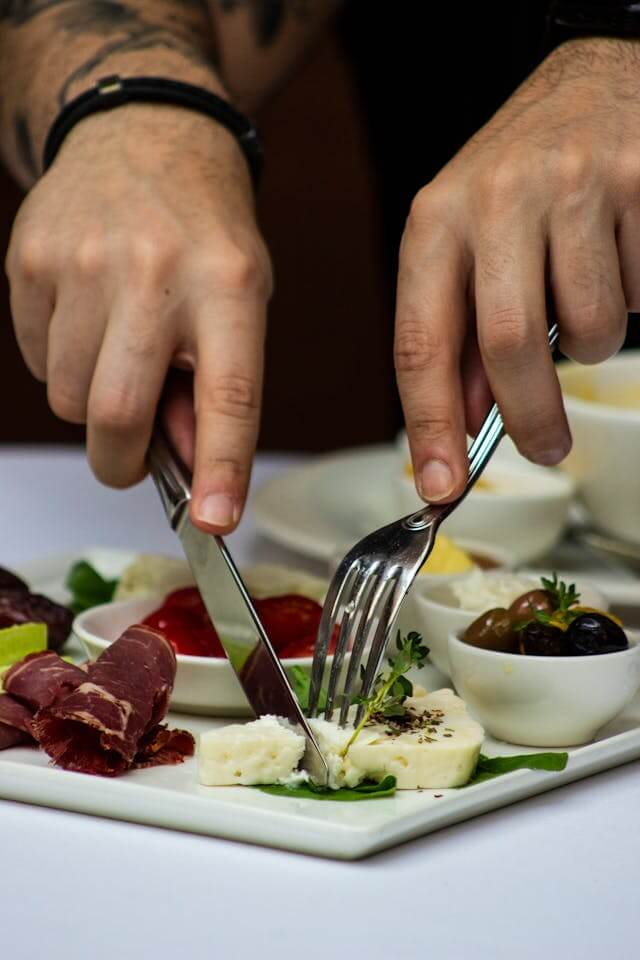

Verduras y frutas Manzana Platano Pina Acelga Zanahoria Lechuga Chocolate cebolla Una coleccion de frutas Carnes y lacteos Bistec Huevo Salchicha  Variedad de carnes Cereales y azucares Lechera Nuttella Pan arroz Torilla Un valle cubierto por cereales